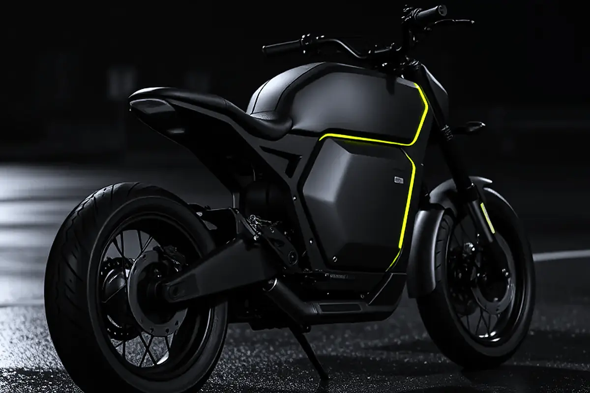
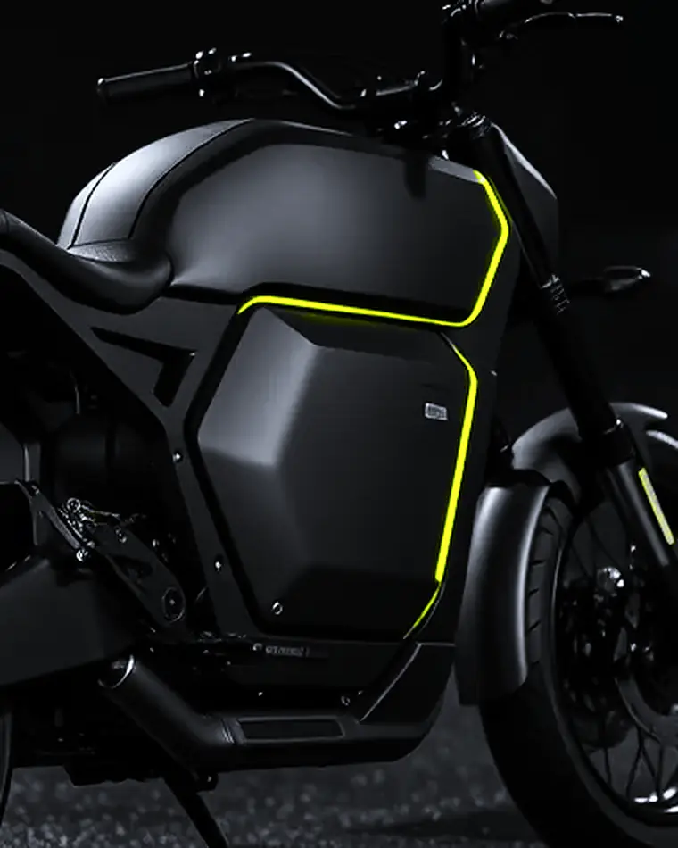
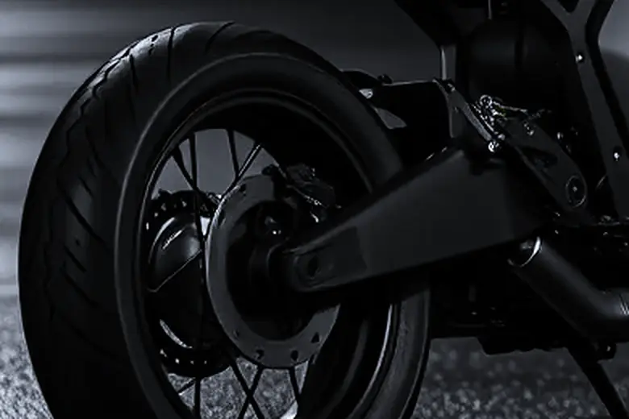
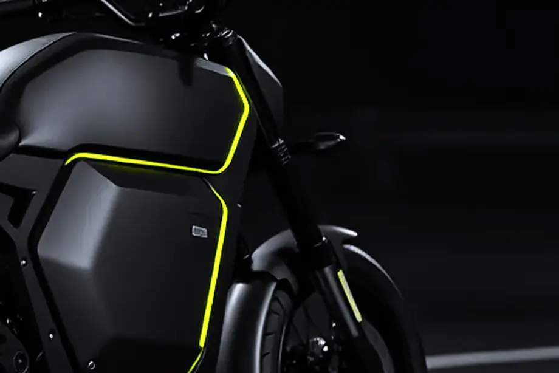
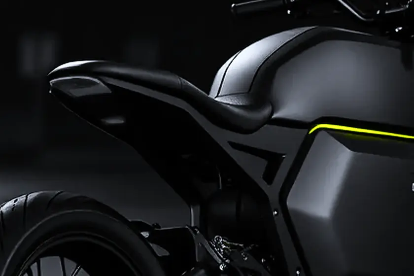

Type 04 · Naked01 / 03
Street
The one without apologies. Flat bar, no screen, no storage, a seat that discourages passengers.
₹2,84,000Reserve Vaayu Street →
An electric motorcycle with nothing in the middle. No engine, no gearbox, no noise you did not ask for.
01 — The argument
Every motorcycle sold in this country is an apology for its engine. Fairings to hide it, chrome to forgive it, an exhaust note engineered to make you want it. Take the engine out and there is nothing left to style around — which is either a problem or the whole point.
We built the frame first. The battery is structural, the motor sits in the hub, and the space where a cylinder would have been is simply air.
02 — Measured, not claimed
Range · IDC cycle · 21.5 kWh pack
Nought to sixty · one rider · no launch mode
Ten to eighty per cent · 50 kW charger
03 — The machine
A frame, a battery that is part of the frame, and a motor inside the rear wheel. That is the whole drivetrain. The space between your knees is air.


04 — Three of them

Type 04 · Naked01 / 03
The one without apologies. Flat bar, no screen, no storage, a seat that discourages passengers.

Type 06 · Tourer02 / 03
Same frame, a larger pack and a longer seat. For people who ride to other cities on purpose.

Type 01 · Track03 / 03
Eighty units. No mirrors, no indicators, no number plate mount. Sold on the understanding that you own a trailer.
05 — Four finishes
Four coats, flatted by hand between each, twelve hours in the booth. Every finish costs the same, and every model comes in all four.
Four finishes · every model · no surcharge
06 — Build slots · Batch 01
₹10,000 holds a build slot and is fully refundable until the frame is welded. Deliveries begin in Chennai, Bengaluru and Delhi.
Reserve a build slotConcept site · nothing is reserved · Commission one like it → · See the studio →